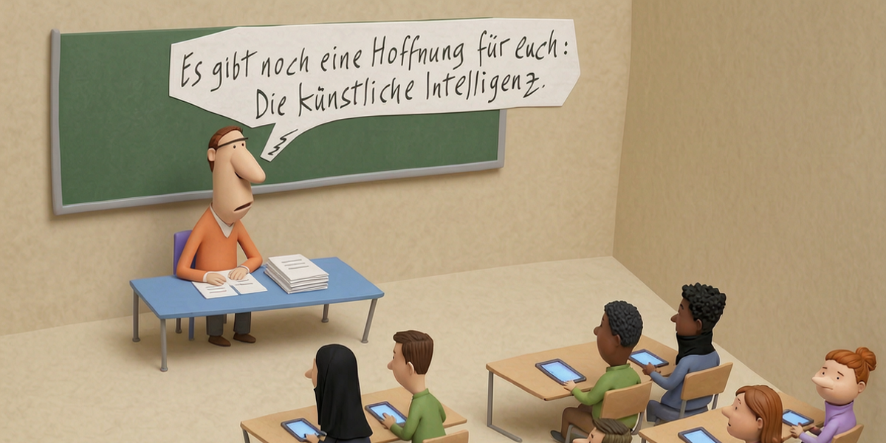

PISA beweist: Politik wirkt
Deutschland erreicht neue Bildungstiefstwerte. Die Politik reagiert.

BERLIN – CDU und SPD feiern den PISA-Absturz als gemeinsamen Erfolg. Nach jahrelanger politischer Anstrengung störte Bildung den Schulbetrieb endlich kaum noch.
Die Grünen begrüßten das Ende privilegierten Wissens. Für die Linke ist Bildungsabbau konsequente Umverteilung: Ohne Bildung könne niemand ungerechte Wissensvorsprünge anhäufen.
Insbesondere die CDU schrieb die niedrigen Werte ihrer genialen Politik zu, und das nicht nur im Bildungswesen. Unerwartet sei das unterdurchschnittliche Abschneiden der Kinder importierter Facharbeiter, Hirnchirurgen und Raketenforscher. Man habe befürchtet, Intelligenz und Fleiß der hochgebildeten Eltern würden sich auf deren Nachwuchs übertragen. „Das scheint jedoch nicht der Fall zu sein“, erklärte ein erleichterter CDU-Sprecher.
Annalena Baerbock kritisierte als Einzige ungefragt das Ergebnis. Deutschland müsse sich um 360 Grad ändern, damit Hunderttausende Kilometer entfernte Länder nicht gebildeter seien. Unter 1,3 Milliarden Europäern dürften nicht ausgerechnet die Deutschen die dümmsten sein. Das sei kein Bacon of Hope.
Gemeinsam baten die Regierungsparteien allerdings die EU, ihren Kurs zu ändern und KI nicht länger zu Tode zu regulieren. Irgendeine Intelligenz müsse schließlich übrig bleiben, um den Umverteilungsmechanismus weiter in Gang zu halten.
Merz begrüßte die Entwicklung besonders: Wenn die Kinder als Nutznießer des Bildungssystems nichts mehr verstünden, könnten sie sicherlich auch nicht begreifen, dass die Schulden, die er heute macht, von ihnen über Generationen abbezahlt werden müssen.
Die Schulen produzieren damit zuverlässig den Nachwuchs für die nächste Generation der Politikerklasse.
Anlass: Laut OECD PISA 2025 erreichte Deutschland in Lesen, Mathematik und Naturwissenschaften die niedrigsten bislang gemessenen Werte.
← Zurück zur Startseite